材料
※粉量を変えると自動計算されます
生地
フィリング
型
作り方
生地
STEP 1
仕込み水を作る
ぬるま湯に砂糖とドライイーストを加え、よく混ぜ合わせます。
ぬるま湯に砂糖とドライイーストを加え、よく混ぜ合わせます。
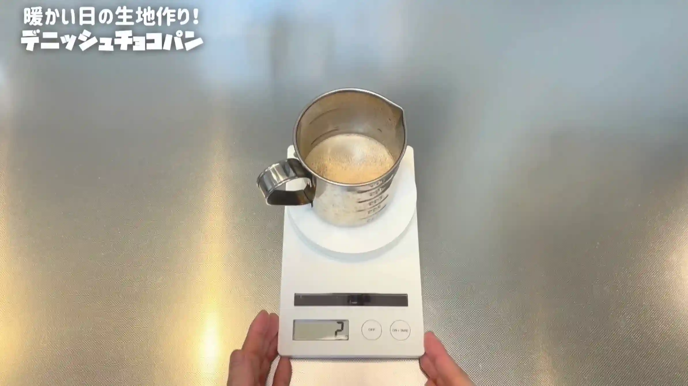
STEP 2
粉類と仕込み水をヘラで混ぜる
ボウルに入れた強力粉と塩へ仕込み水を注ぎ、ヘラで1分半かけて混ぜていきます。粉気がなくなって生地が一つになれば、OKです。
ボウルに入れた強力粉と塩へ仕込み水を注ぎ、ヘラで1分半かけて混ぜていきます。粉気がなくなって生地が一つになれば、OKです。
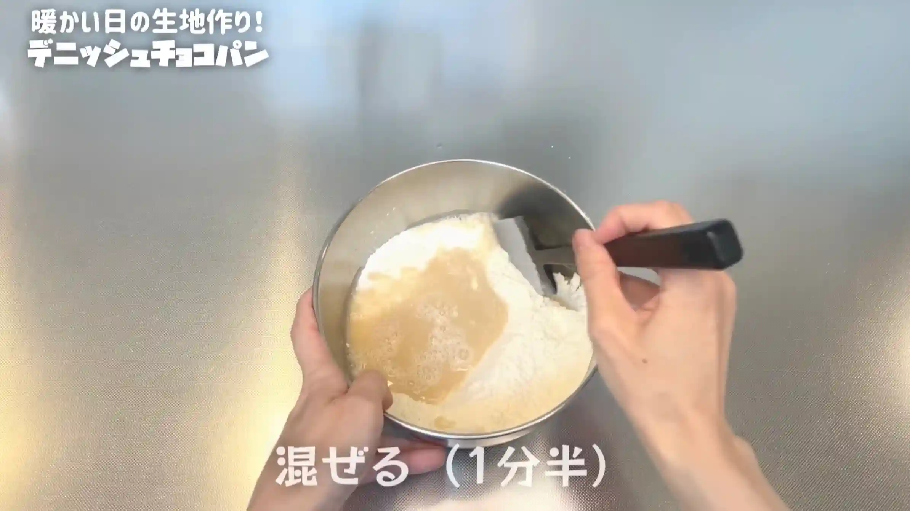
STEP 3
バターを加え、捏ねる（[動画 04:34]）
バターを加えて、ボウルの中で3分〜4分ほど捏ねます。生地にバターを加えておくことで伸びがよくなり、後の折り込みでバターを包んで伸ばしやすくなります。
バターを加えて、ボウルの中で3分〜4分ほど捏ねます。生地にバターを加えておくことで伸びがよくなり、後の折り込みでバターを包んで伸ばしやすくなります。
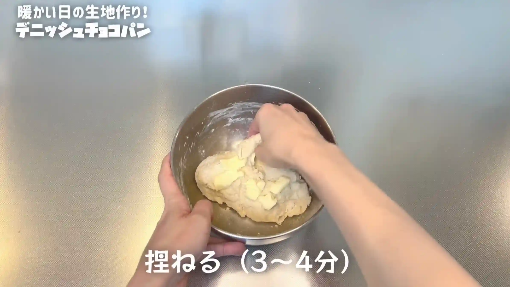
STEP 4
室温で15分おく
乾燥しないようにラップをして、15分ほど休ませます。粉が水分を吸うことで、生地が自然と扱いやすくなります。
乾燥しないようにラップをして、15分ほど休ませます。粉が水分を吸うことで、生地が自然と扱いやすくなります。
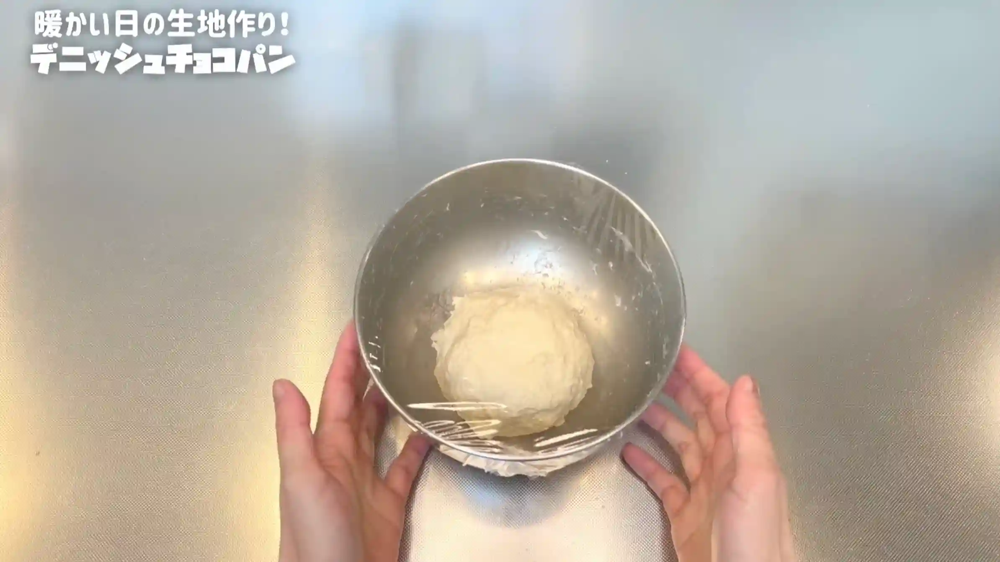
STEP 5
バターシートを作る
STEP 6
生地をボウルの中で叩く
生地をボウルの中で1分ほど叩きます。生地に残っていたベタつきと粗さがとれ、表面がツルッときれいにまとまれば、次の工程へ進みます。
生地をボウルの中で1分ほど叩きます。生地に残っていたベタつきと粗さがとれ、表面がツルッときれいにまとまれば、次の工程へ進みます。
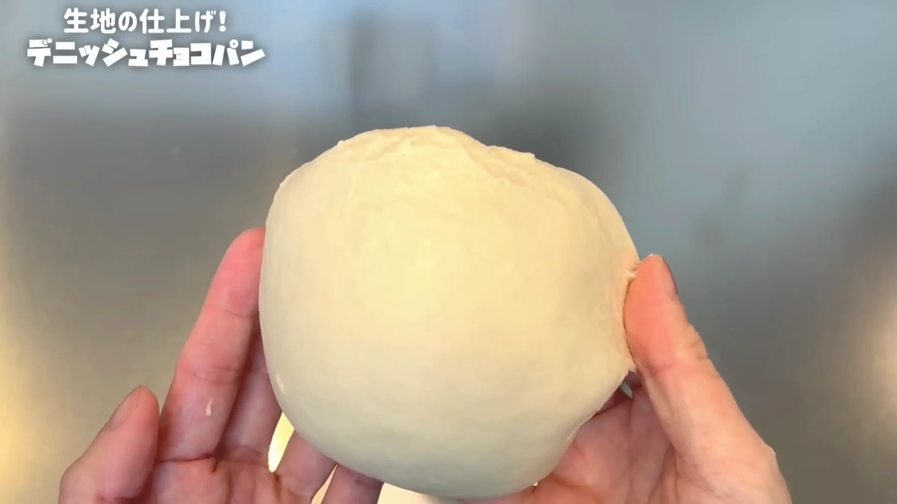
STEP 7
室温で1.5倍に膨らむまでおく
乾燥しないようにラップをして、一次発酵させます。60分を目安に、生地が元の約1.5倍に膨らむまでおいていきます。発酵時間は室温によって変わるため、生地の膨らみを確認して次の工程へ進みます。
乾燥しないようにラップをして、一次発酵させます。60分を目安に、生地が元の約1.5倍に膨らむまでおいていきます。発酵時間は室温によって変わるため、生地の膨らみを確認して次の工程へ進みます。
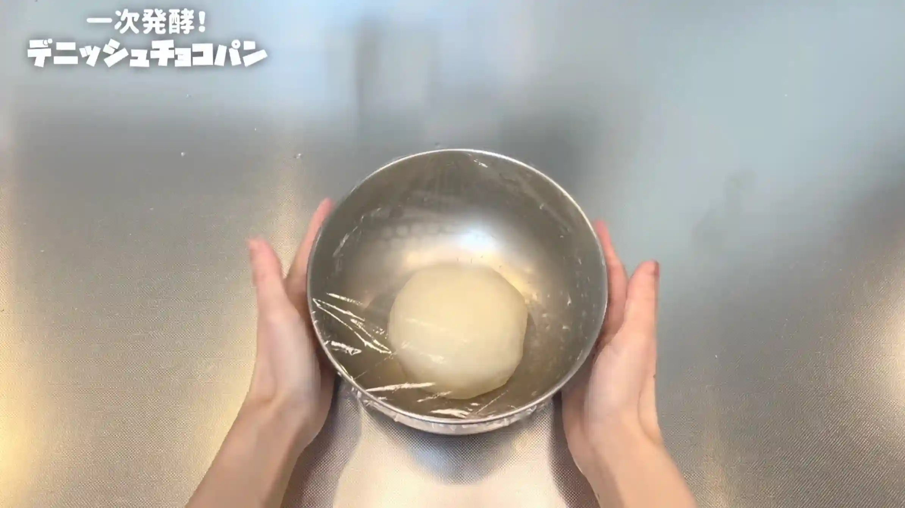
STEP 8
生地を広げてバターシートを置く
バターシートの約2倍のサイズまで生地を伸ばしたら、中央にシートを置きます。上と下の生地を少し余らせておくと、あとで折り込んだときにバターがはみ出す心配が減ります（画像参照）。
バターシートの約2倍のサイズまで生地を伸ばしたら、中央にシートを置きます。上と下の生地を少し余らせておくと、あとで折り込んだときにバターがはみ出す心配が減ります（画像参照）。
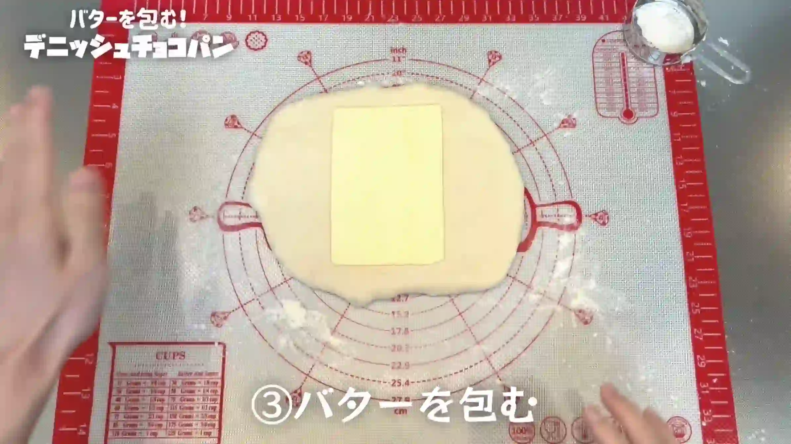
STEP 9
生地でバターシートを包む
生地でバターシートをすっぽり包み、閉じ目をしっかり押さえます。バターが外へ出てくると折り込みがやりにくくなるため、ここでは端を丁寧に合わせて閉じます。
生地でバターシートをすっぽり包み、閉じ目をしっかり押さえます。バターが外へ出てくると折り込みがやりにくくなるため、ここでは端を丁寧に合わせて閉じます。
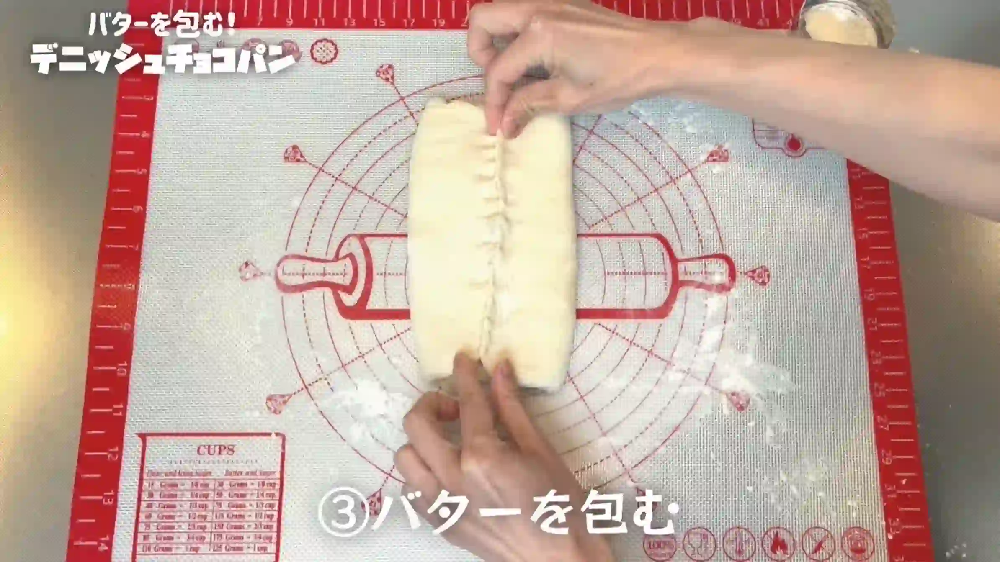
STEP 10
生地を手のひら3つ分に伸ばす（[動画 08:57]）
生地を横長の向きに置き、まずは生地とバターを密着させるように、手でやさしく押して生地の厚みをそろえます。そこから、めん棒を使い、生地を手のひら3つ分ほどのサイズに伸ばします。
生地を横長の向きに置き、まずは生地とバターを密着させるように、手でやさしく押して生地の厚みをそろえます。そこから、めん棒を使い、生地を手のひら3つ分ほどのサイズに伸ばします。
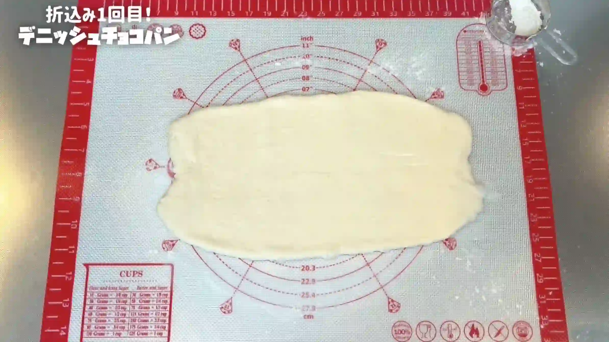
STEP 11
三つ折りする（1回目）
伸ばした生地を三つ折りにします。折り目をそろえて折ることで、この先の折り込みでも層がそろいやすくなります。
伸ばした生地を三つ折りにします。折り目をそろえて折ることで、この先の折り込みでも層がそろいやすくなります。
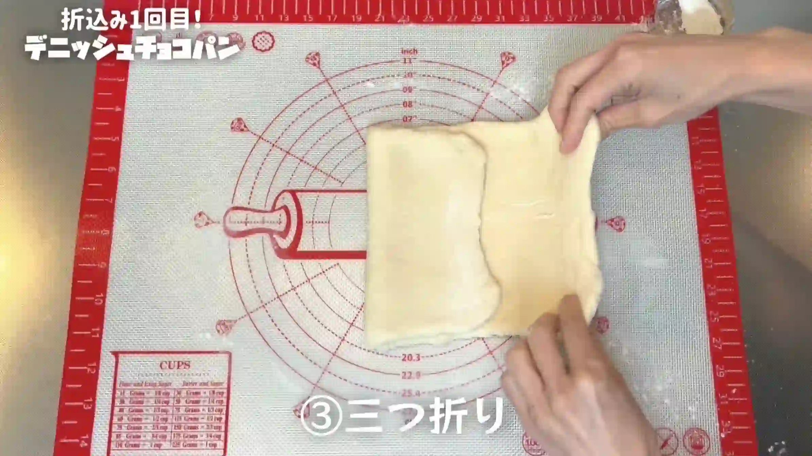
STEP 12
生地を手のひら3つ分に伸ばす
再び手のひら3つ分ほどの長さを目安に伸ばします。生地が縮んで伸ばしにくい場合は、無理に引っ張らず、冷蔵して少し休ませてから続けます。
再び手のひら3つ分ほどの長さを目安に伸ばします。生地が縮んで伸ばしにくい場合は、無理に引っ張らず、冷蔵して少し休ませてから続けます。
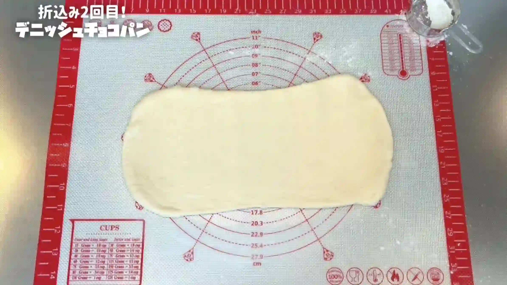
STEP 13
三つ折り（2回目）
再び三つ折りにします。
再び三つ折りにします。
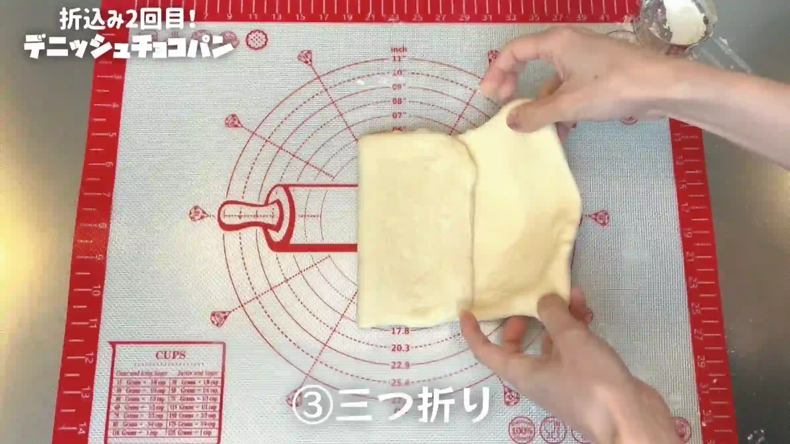
STEP 14
30分冷蔵する
生地をラップで包み、冷蔵します。冷やすことでバターが締まり、生地も扱いやすくなります。
生地をラップで包み、冷蔵します。冷やすことでバターが締まり、生地も扱いやすくなります。
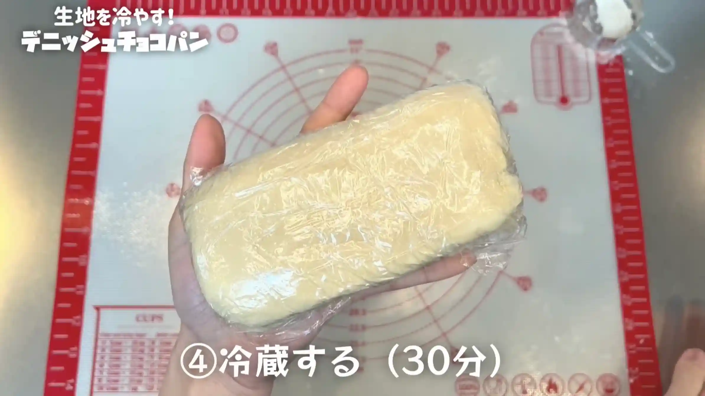
STEP 15
型にバターを塗る
パウンド型の内側にバターを塗っておきます。焼き上がった生地を型から取り出しやすくするため、全体にしっかり塗るのがポイントです。
パウンド型の内側にバターを塗っておきます。焼き上がった生地を型から取り出しやすくするため、全体にしっかり塗るのがポイントです。
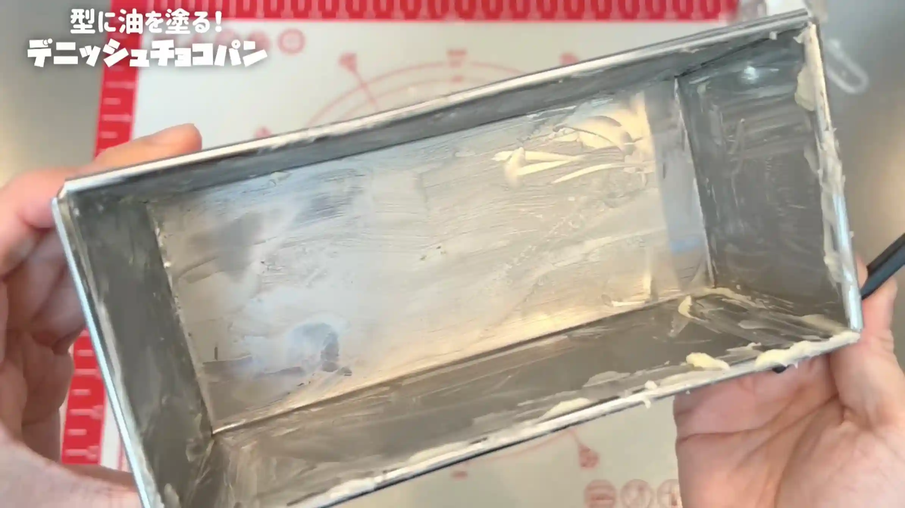
STEP 16
生地を伸ばして三つ折り（3回目・任意）
生地の状態を見て、無理なく伸ばせそうなら3回目の三つ折りをします。生地が縮んだり伸ばしにくかったりする場合は、無理に折り込まず、そのまま次の工程へ進んでもOKです。
生地の状態を見て、無理なく伸ばせそうなら3回目の三つ折りをします。生地が縮んだり伸ばしにくかったりする場合は、無理に折り込まず、そのまま次の工程へ進んでもOKです。
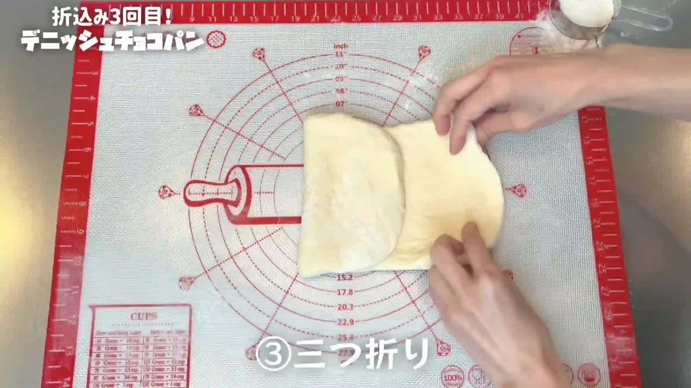
STEP 17
生地を35㎝×18㎝に伸ばす
生地を35㎝×18㎝ほどの大きさに伸ばします。ここまでくると、生地に硬さが出てかなり伸ばしにくくなっていますが、少し時間をかけても良いので、ゆっくり全体の厚みが均一になるように伸ばしていきます。
生地を35㎝×18㎝ほどの大きさに伸ばします。ここまでくると、生地に硬さが出てかなり伸ばしにくくなっていますが、少し時間をかけても良いので、ゆっくり全体の厚みが均一になるように伸ばしていきます。
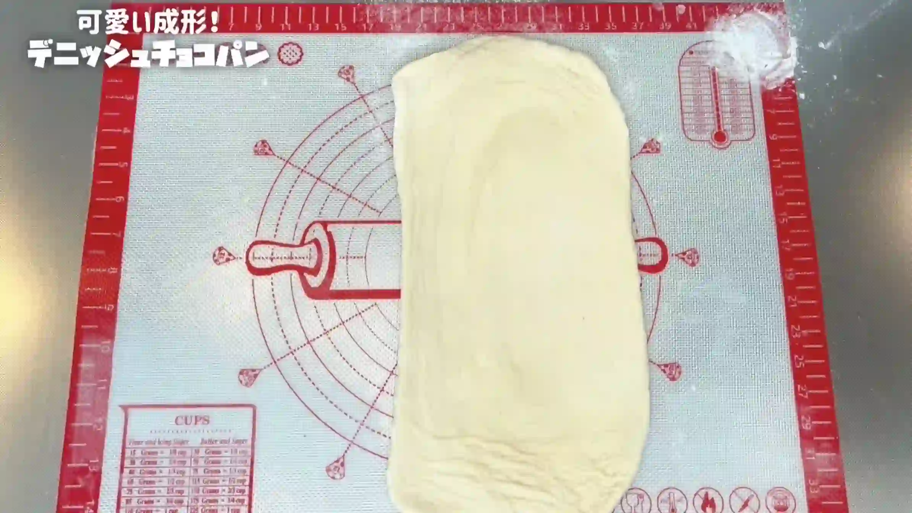
STEP 18
生地の上半分にフィリングをのせる（[動画 14:18]）
生地の上半分にチョコとナッツを広げます。巻くときに散らばらないよう、チョコとナッツを生地に軽く押し付けておきます。
生地の上半分にチョコとナッツを広げます。巻くときに散らばらないよう、チョコとナッツを生地に軽く押し付けておきます。
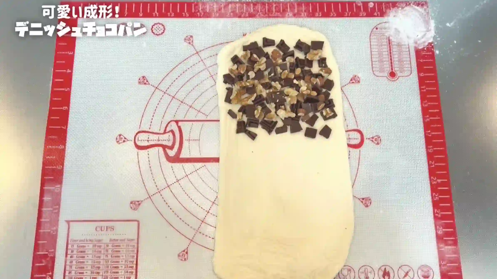
STEP 19
生地を巻き、下半分に切れ込みを入れる（[動画 14:33]）
まず上半分を巻きます。巻き始めは生地で芯を作るようにすると、巻きやすくなります。巻いた生地が開いてこないように、めん棒などで支えておきます。次に下半分を3等分するように切れ込みを入れ、それぞれの中央に、上下を少し残して切れ込みを入れます。
まず上半分を巻きます。巻き始めは生地で芯を作るようにすると、巻きやすくなります。巻いた生地が開いてこないように、めん棒などで支えておきます。次に下半分を3等分するように切れ込みを入れ、それぞれの中央に、上下を少し残して切れ込みを入れます。
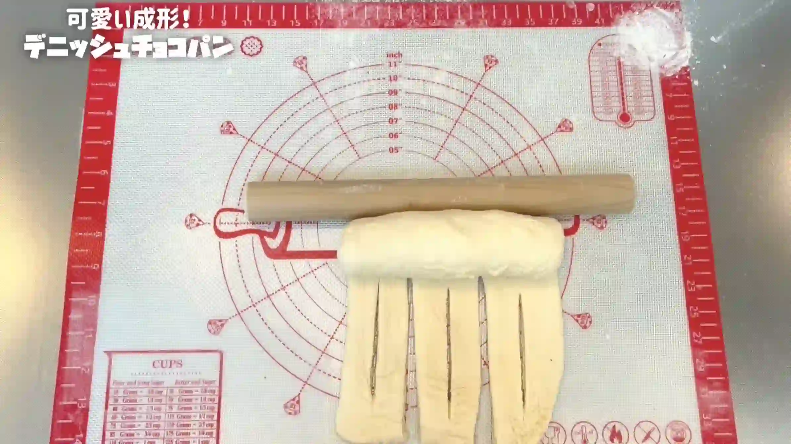
STEP 20
こんにゃくのようにねじる（[動画 15:29]）
切れ込みを入れた生地を、手綱こんにゃくの要領で2回ねじります。力を入れすぎると、生地が伸びて細くなってしまうので、なるべく自然な力で太めにねじります。こうすることで、焼き上がったときに模様が立体的に見えて可愛く仕上がります。
切れ込みを入れた生地を、手綱こんにゃくの要領で2回ねじります。力を入れすぎると、生地が伸びて細くなってしまうので、なるべく自然な力で太めにねじります。こうすることで、焼き上がったときに模様が立体的に見えて可愛く仕上がります。
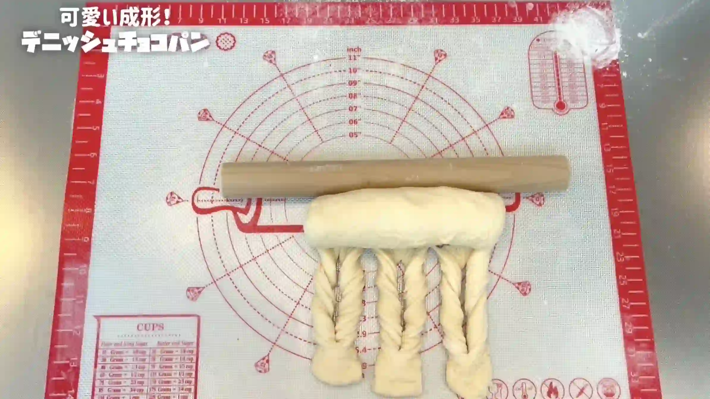
STEP 21
生地を巻いて型に入れる（[動画 16:17]）
生地を巻いて、型に入れます。ここで、ねじった生地を少し中央に寄せて巻くことで、焼いたときに模様が見えやすくなり、可愛く仕上がります。
生地を巻いて、型に入れます。ここで、ねじった生地を少し中央に寄せて巻くことで、焼いたときに模様が見えやすくなり、可愛く仕上がります。
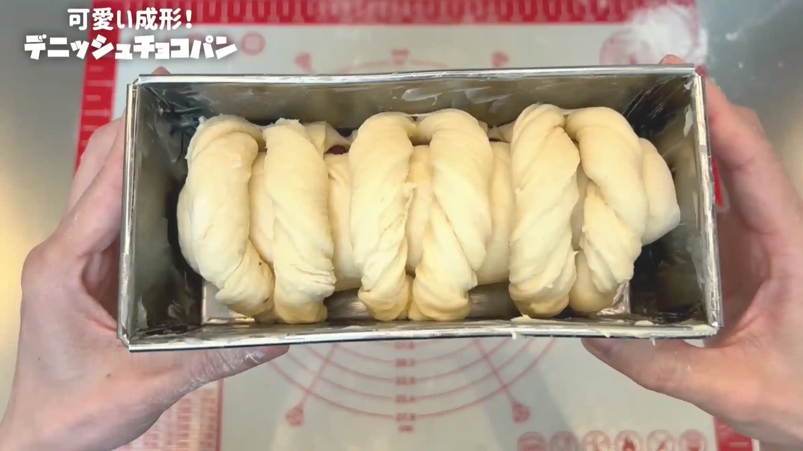
STEP 22
室温で型いっぱいに膨らむまでおく
乾燥しないようにラップをして、型いっぱいに膨らむまで二次発酵させます。50分〜90分を目安に、生地の膨らみを見ながら調整してください。
乾燥しないようにラップをして、型いっぱいに膨らむまで二次発酵させます。50分〜90分を目安に、生地の膨らみを見ながら調整してください。
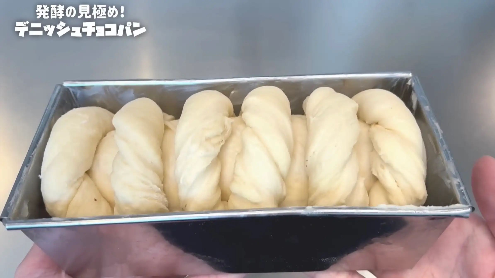
STEP 23
オーブンを250℃に予熱する
焼成前にオーブンを250℃に予熱しておきます。
焼成前にオーブンを250℃に予熱しておきます。
STEP 24
牛乳を塗り、オーブン210℃で30分焼く
生地の表面に牛乳を薄く塗り、210℃で30分を目安に焼きます。途中で表面に焼き色がついたらアルミホイルをかぶせ、焦げすぎないようにします。焼き時間は目安とし、焼き色を確認しながら、ご家庭のオーブンに合わせて調整してください。
生地の表面に牛乳を薄く塗り、210℃で30分を目安に焼きます。途中で表面に焼き色がついたらアルミホイルをかぶせ、焦げすぎないようにします。焼き時間は目安とし、焼き色を確認しながら、ご家庭のオーブンに合わせて調整してください。
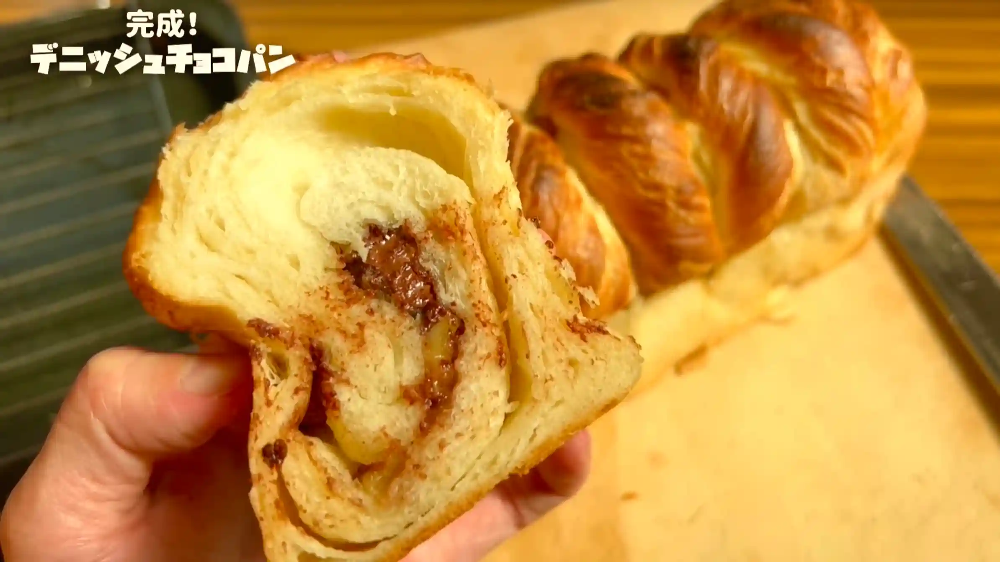
バターシート
STEP 1
ラップにバターを並べる
40gのバターを6枚に切り分け、広げたラップの上に長方形に並べます。市販のバターに入っている目盛りを目安にすれば、細かく計量しなくても大丈夫です。
40gのバターを6枚に切り分け、広げたラップの上に長方形に並べます。市販のバターに入っている目盛りを目安にすれば、細かく計量しなくても大丈夫です。
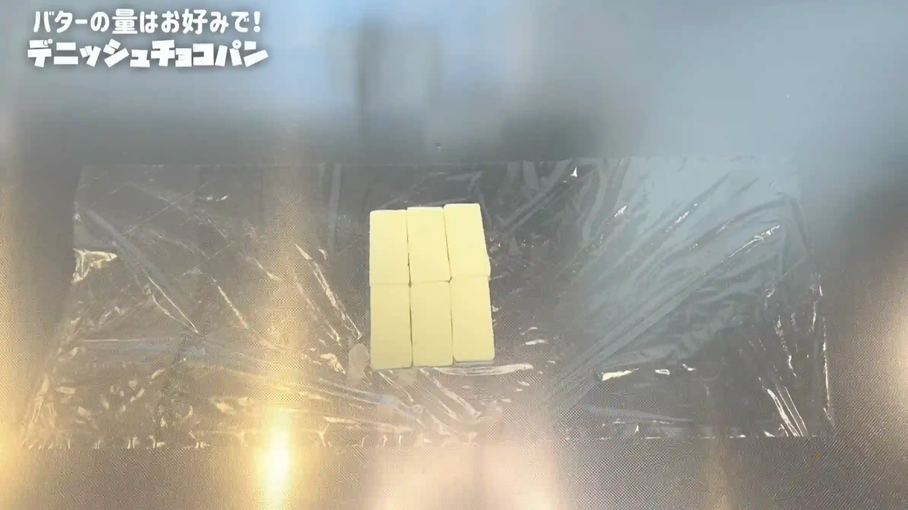
STEP 2
ラップをピッタリ閉じる
バターがはみ出さないよう、並べた形に合わせてラップをぴったり閉じます。
バターがはみ出さないよう、並べた形に合わせてラップをぴったり閉じます。
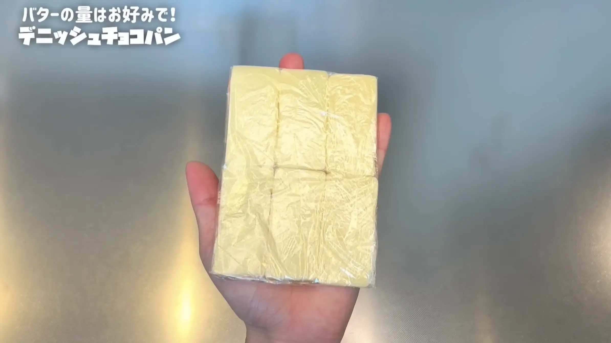
STEP 3
めん棒で平らにならす
バターをめん棒で押して平らにのばし、つなぎ目が見えなくなったら完成です。手のひらサイズの長方形が目安です。
バターをめん棒で押して平らにのばし、つなぎ目が見えなくなったら完成です。手のひらサイズの長方形が目安です。
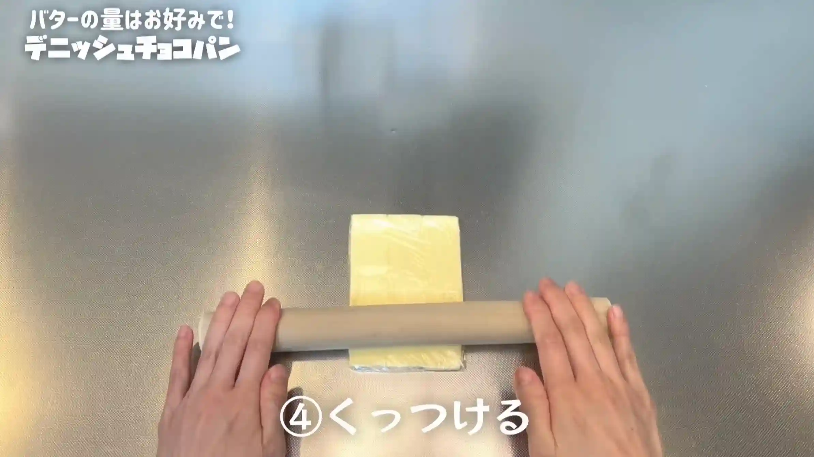
STEP 4
冷蔵する
折り込みに使いやすい硬さになるまで冷蔵します。バターが柔らかすぎると、折り込みの際にはみ出してきてしまうので、冷たい状態を保っておきます。今回はバターの量を少なめにしているため、一般的なデニッシュ生地よりも折り込みがしやすく、きれいに層を作りやすくなっています。
折り込みに使いやすい硬さになるまで冷蔵します。バターが柔らかすぎると、折り込みの際にはみ出してきてしまうので、冷たい状態を保っておきます。今回はバターの量を少なめにしているため、一般的なデニッシュ生地よりも折り込みがしやすく、きれいに層を作りやすくなっています。
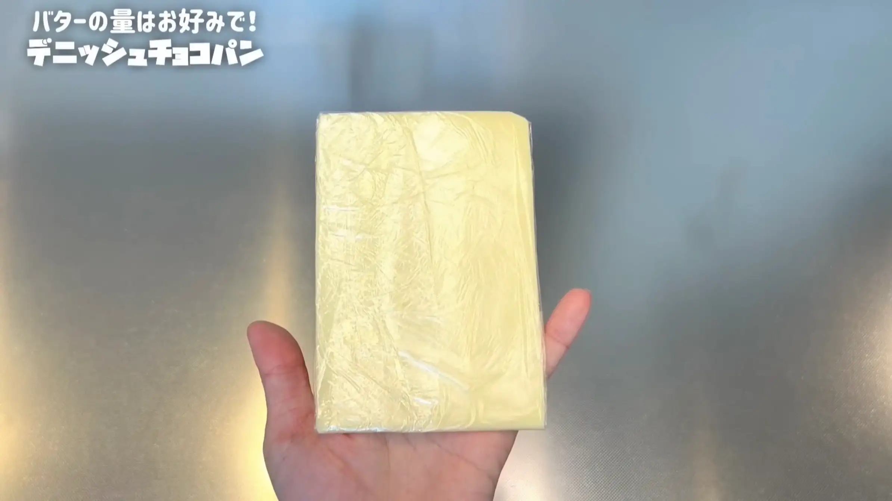
動画でチェック
おいしく作るためのワンポイントコラム
外はサクッと、中はしっとり焼き上がる『チョコデニッシュ食パン』！難しそうに思えるデニッシュパンですが、おうちで手軽に作れるよう配合に工夫を凝らしました。そして、なんと言っても目を引くのがこのねじねじ成形！海外のSNSで見かけた成形にアレンジを加えて、可愛く仕上げてみました。それでは、美味しく焼き上げる3つのポイントをご紹介します。
① 折り込みを簡単にするコツ
バターの量が多いと折り込みの難易度が上がってしまうため、今回はバターの量を控えめにするのがポイントです。一般的なデニッシュ生地は粉に対して約40％ほどバターを使いますが、今回は約20％に抑えました。こうすることで折り込み時にバターがはみ出す心配がなく、しっかりサクサク食感もキープした美味しい生地ができあがります！また、バターシートとは別に生地自体にも少量のバターを入れておくのも大切なコツ。生地が伸びやすくなり、バターを包んで伸ばす折り込み作業がぐっと楽になります。
② 生地作りのコツ
暖かい日はイーストを少し減らすことで、生地がダレてベタベタになるのを防げます。それでも捏ねている途中でベタつく時は、焦って打ち粉を足さずに15分ほどお休みさせるのがコツ！粉がしっかり水分を吸い込んで自然と扱いやすくなるので、そのあとボウルの中で生地を1分ほど叩くだけで、驚くほどつるっと綺麗にまとまってくれます。
③ 可愛い成形のコツ
焼き上がったときに型からこんもり溢れるボリューム感を出すため、今回は粉の量を調整しています。通常18cmのパウンド型だと150gほどの粉で作ることが多いですが、今回は180gと多めの量で作りました！成形は生地の下半分に切れ目を入れてネジネジするこんにゃく成形を取り入れ、ねじった生地を少し中央に寄せてからくるくる巻くのがポイントです。こうすることで模様に隙間ができず、立体的で可愛い見た目に仕上がります。
外はサックサク、中はふんわりリッチな焼き上がりで、もはやお店レベルの美味しさに感動すること間違いなし！可愛いねじねじ成形は見た目も華やかで、プレゼントにもぴったりです。「デニッシュパンって、なんだか難しそう…」と今まで諦めていた方も、作ってみると案外簡単。そして何よりとっても楽しいので、ぜひ一度チャレンジしてみてください。
① 折り込みを簡単にするコツ
バターの量が多いと折り込みの難易度が上がってしまうため、今回はバターの量を控えめにするのがポイントです。一般的なデニッシュ生地は粉に対して約40％ほどバターを使いますが、今回は約20％に抑えました。こうすることで折り込み時にバターがはみ出す心配がなく、しっかりサクサク食感もキープした美味しい生地ができあがります！また、バターシートとは別に生地自体にも少量のバターを入れておくのも大切なコツ。生地が伸びやすくなり、バターを包んで伸ばす折り込み作業がぐっと楽になります。
② 生地作りのコツ
暖かい日はイーストを少し減らすことで、生地がダレてベタベタになるのを防げます。それでも捏ねている途中でベタつく時は、焦って打ち粉を足さずに15分ほどお休みさせるのがコツ！粉がしっかり水分を吸い込んで自然と扱いやすくなるので、そのあとボウルの中で生地を1分ほど叩くだけで、驚くほどつるっと綺麗にまとまってくれます。
③ 可愛い成形のコツ
焼き上がったときに型からこんもり溢れるボリューム感を出すため、今回は粉の量を調整しています。通常18cmのパウンド型だと150gほどの粉で作ることが多いですが、今回は180gと多めの量で作りました！成形は生地の下半分に切れ目を入れてネジネジするこんにゃく成形を取り入れ、ねじった生地を少し中央に寄せてからくるくる巻くのがポイントです。こうすることで模様に隙間ができず、立体的で可愛い見た目に仕上がります。
外はサックサク、中はふんわりリッチな焼き上がりで、もはやお店レベルの美味しさに感動すること間違いなし！可愛いねじねじ成形は見た目も華やかで、プレゼントにもぴったりです。「デニッシュパンって、なんだか難しそう…」と今まで諦めていた方も、作ってみると案外簡単。そして何よりとっても楽しいので、ぜひ一度チャレンジしてみてください。


パウンド型を使い、スーパーの身近な材料で焼き上げる『チョコデニッシュ食パン』！中にチョコとナッツを巻き込み、可愛いねじねじ成形で仕上げました。ハードルが高く見える折り込みパンですが、おうちでも手軽に作れる工夫をたくさん詰め込んだとっておきのレシピです！コラムでは3つのコツをご紹介します。